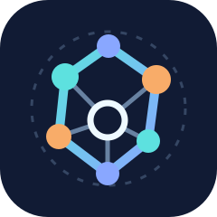

Бізнес-джерело відділене від технічного способу надходження.
← Усі проєкти

CLIENTCIRCUIT / CRM · VIKUNJAПРИКЛАД ВИКОНАНОЇ РОБОТИ / CRM ТА ІНТЕГРАЦІЇ
ClientCircuit — від звернення до клієнтського проєкту
Модифікація справжньої платформи Vikunja: вхідні ліди, контакти, задачі, дзвінки й безперервна історія клієнта в одному робочому просторі.
Як звернення стає клієнтським проєктом?
Замість розірваних журналів — одна послідовна історія. Кожен етап зберігає походження заявки й контекст контакту.
Контакт, відповідальний, статус і журнал подій.
Клієнтські профілі, проєкти, Kanban, контроль виконання.
Попередні контакти не губляться під час конвертації.
Відомо, звідки прийшов клієнт і як запис потрапив у систему.
Повторна доставка тієї самої події не має створювати дублікати.
Публічна версія працює з вигаданими записами в браузері, без робочої бази.
Демонстраційні дії не створюють справжніх дзвінків, листів чи заявок. Зовнішнє підключення вебформи тут змодельоване, а не заявлене як завершена production-інтеграція.
Проблема
Заявки, дзвінки, задачі та історія контактів існують у різних частинах процесу. Під час переходу від ліда до клієнтського проєкту губляться контекст і джерело звернення.
Рішення
Розширити відкриту платформу Vikunja CRM-сутностями та інтегрованим Call Center, залишивши звичні інструменти керування проєктами й задачами.
Що реалізовано
- CRM-профілі, контакти, відповідальні, статуси та користувацькі поля.
- Історія подій: нотатки, дзвінки, зустрічі й зміни задач.
- Call Center: ліди, джерела, записи контактів і зміни статусів.
- Списки задач, Kanban та інтерактивні сценарії у браузерній демоверсії.
Технічний підхід
Vikunja (Go / Vue / TypeScript) · API-контракти · Git · автоматизоване тестування. ClientCircuit є модифікацією Vikunja та інтеграційною роботою, а не повністю самостійно створеним task manager.
Демонстрація та перевірка
Публічна версія використовує оригінальний Vue-інтерфейс із локальним адаптером даних. Відвідувач входить як вигаданий демоадміністратор; дані ізольовані у браузері. Перед випуском проведено модульні та браузерні тести, зокрема створення задач і збереження після перезавантаження.
Походження коду, ліцензії та приватність
В основі — проєкт Vikunja з відкритим кодом; компонент Call Center адаптовано з Open Cold Dialer. Ліцензії вихідних компонентів зберігають чинність. Ліцензійна інформація · Відповідні вихідні тексти Vue-демо. Демо не містить робочої бази клієнтів, токенів або конфігурацій серверів.